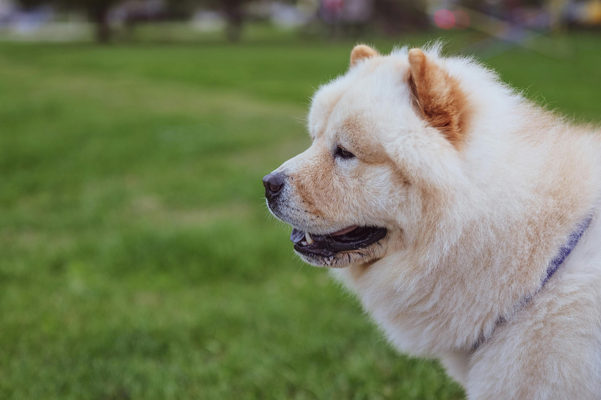

CHOW-CHOW
The chow-chow is one of the most unique dog breeds in the world, known for its lion like mane, deep-set eyes, and proud personality. Originally from China, this ancient breed combines beauty, strength, and loyalty in a way few others do. Whether it's their distinctive blue-black tongue or their calm, cat-like independence, Chow Chows always stand out wherever they go
While the Chow Chow may appear reserved at first, this breed forms a strong and loyal bond with its family. They are intelligent, clean, and often compared to cats because of their self-reliant and sometimes aloof behavior. Chow Chows do best with patient owners who respect their space and understand their unique temperament. With proper care, socialization, and training, these dogs make devoted and protective companions that bring both beauty and grace to any home.